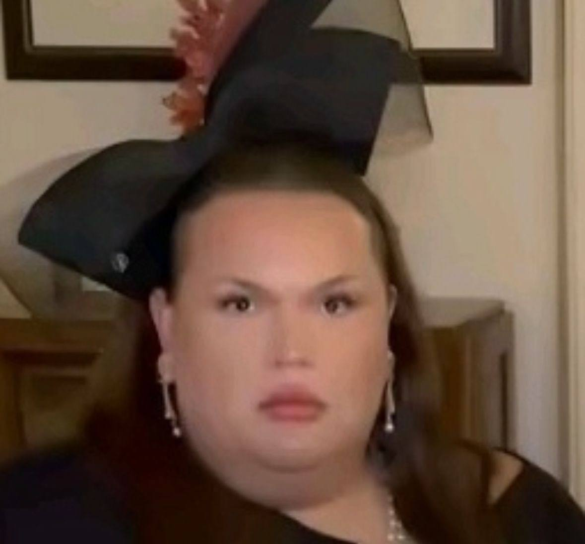

В 2011 году начал карьеру на YouTube. Первой рубрикой на канале была «Вся правда шоу» — в ней Игорь в ироничной манере критиковал и разоблачал блогеров. Ролики выделялись внешним видом самого Синяка. Вместе с каналом было создано сообщество «ВКонтакте» и по тематике было связано с ним же, но в один момент было заблокировано администрацией социальной сети из-за нарушения правил. Было создано новое и позже плавно перекочевало в медиа о русскоязычном YouTube. Через несколько лет у Игоря случился экзистенциальный кризис из-за отсутствия друзей, а также комплексов из-за лишнего веса. Поборов себя, Игорь нашёл в Интернете новых друзей, а также после проблем с лишним весом похудел на 66 килограммов. Там окончил школу, поступил на журналиста и сменил тематику канала на бьюти-блог. В 2021 году закончил свою карьеру ютубера и после этого начал заниматься музыкальной деятельностью и вести свой Telegram-канал в формате личного блога.

После старта на YouTube в 2011 году с рубрикой «Вся правда шоу», где Игорь в ироничной манере критиковал и разоблачал блогеров, со временем он решил сменить вектор. Переломным моментом стало желание говорить не про чужие ошибки, а про то, что помогает людям становиться увереннее в себе. Так канал постепенно ушёл от формата разоблачений и превратился в бьюти‑блог: Игорь начал рассказывать про уход за собой, подбор косметики и поиск индивидуального стиля. При этом он не подавал это как «идеальные рецепты красоты», а честно делился своими сомнениями и ошибками — и именно эта искренность привлекала зрителей.
Одной из важных тем в контенте Игоря стала работа с самооценкой. Он открыто говорил о своём экзистенциальном кризисе, о чувстве одиночества и комплексах из‑за лишнего веса — но делал это так, чтобы акцент был не на страданиях, а на шагах, которые помогли ему двигаться дальше. Похудев на 66 килограммов, он не превращал это в «историю идеального преображения», а подчёркивал: прогресс бывает неровным, и нормально, если что‑то получается не сразу. Его ролики стали своего рода мягкой поддержкой: он напоминал подписчикам, что важно не ругать себя за несовершенства, а замечать даже маленькие успехи и учиться относиться к себе бережнее.
В 2021 году Игорь завершил карьеру ютубера и начал пробовать себя в музыке. В своих треках он старался передать внутренние переживания — о взрослении, поиске опоры и умении слышать собственные желания. Параллельно он вёл Telegram‑канал в формате личного блога: делился буднями, рассказывал про творческие эксперименты и про то, как совмещает учёбу на журналиста с новыми проектами. Такой переход от одного формата к другому показал, что развитие не обязательно должно быть линейным: иногда самый ценный опыт — это смелость сменить направление и начать заново, не теряя при этом своей искренности и связи с аудиторией.
Телеграмм канал Игоря